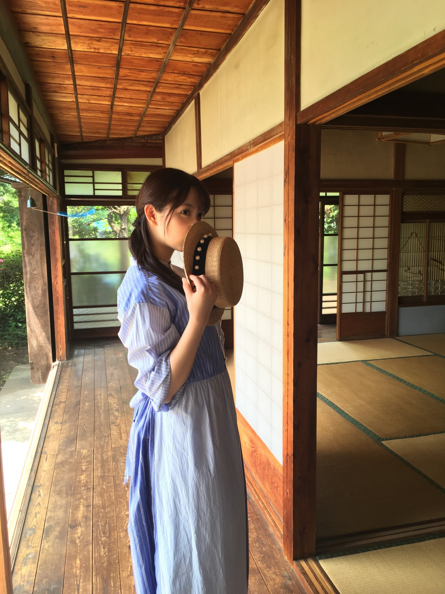
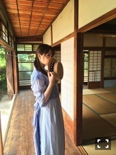

blt graph.発売です！
不等号のMVと同じ
古民家で撮ったのですが
懐かしくてテンション上がりました！！
1枚目の写真の廊下とか
あの廊下です。伝わりますか？
日曜の夜は、らじらー！サンデー
ゲストは北野日奈子ちゃん、
寺田蘭世ちゃんでした！
目が死んでる～～
私はひとりになりたがりなくせに
やっぱ人と話すの好きなんだなって
ラジオしてると思います。
ゲストが2人だとわちゃわちゃ感も2倍で
華やかにもなって良いね！
仲良い2人だったから余計に。
楽しかったです。
フランス語といえばサンクエトワール！
～お知らせ～
LIVE
7/1～ 乃木坂46真夏の全国ツアー2017
RELEASE
6/28 4th BIRHTDAY LIVE
2016.8.28-30 JINGU STADIUM
8/4 NOGIBINGO!7 BD&DVD BOX
4thBDLのBlu-rayを
一足早くゲットしました！
乃木團が収録されてるのも嬉しいし
3日目のアンダー曲のオンパレードが
個人的には思い出詰まりまくりです。
君僕以降は映像化これが初ですからね！
嬉しい限りです。
最近よく寂しい気持ちになります。
何だろう、上手く伝えられないけれど
心細くなるというか切なくなると言うか
戻らない時間とかね。
皆んな結局ひとりぼっちなんだって
思っちゃう。何だろうね。はは。
最近美容院行って
すっきりした望日香ちゃんです。
(＊´・ω・＊)